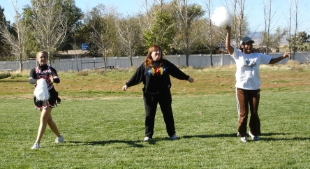
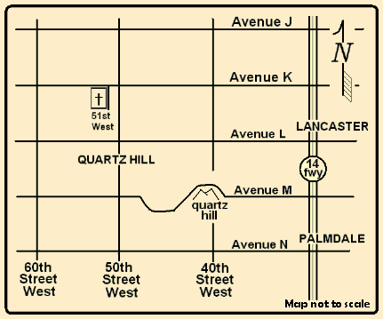

The church is not a building. It is people empowered by the Holy Spirit to share Christ with as many as possible. It seeks to be a worshipping fellowship, experiencing an awareness of God, recognizing his person, and responding in obedience to his leadership. It wants to help our community and our world in Jesus' name. It wants to be Christlike in its daily living.
As Paul wrote:
Just as a body, though one, has many parts, but all its many parts form one body, so it is with Christ. For we were all baptized by one Spirit so as to form one body-whether Jews or Gentiles, slave or free-and we were all given the one Spirit to drink. Even so the body is not made up of one part but of many.
Now if the foot should say, "Because I am not a hand, I do not belong to the body," it would not for that reason stop being part of the body. And if the ear should say, "Because I am not an eye, I do not belong to the body," it would not for that reason stop being part of the body. If the whole body were an eye, where would the sense of hearing be? If the whole body were an ear, where would the sense of smell be? But in fact God has placed the parts in the body, every one of them, just as he wanted them to be. If they were all one part, where would the body be? As it is, there are many parts, but one body.
The eye cannot say to the hand, "I don't need you!" And the head cannot say to the feet, "I don't need you!" On the contrary, those parts of the body that seem to be weaker are indispensable, and the parts that we think are less honorable we treat with special honor. And the parts that are unpresentable are treated with special modesty, while our presentable parts need no special treatment. But God has put the body together, giving greater honor to the parts that lacked it, so that there should be no division in the body, but that its parts should have equal concern for each other. If one part suffers, every part suffers with it; if one part is honored, every part rejoices with it.
Now you are the body of Christ, and each one of you is a part of it.
(1 Corinthians 12:12-27 NIV)
To briefly summarize, this is what we are.
You are welcome to look over the doctrinal statement we share with our school, Quartz Hill School of Theology. Though not long, it gives a complete exposition of what we believe. The list below is a summary of our beliefs.
As a Southern Baptist church we are closely affliated with our local High Desert Baptist Association. We are also associated with the California Southern Baptist Convention. Southern Baptist churches are independently run. That means there will never be a large organization telling us what to do. We like that.
We choose to be Southern Baptist so we can pool our resources to reach out to the world. Southern Baptists have one of the largest overseas missions organizations in the world. In addition Southern Baptists reach out to local communities. In times of disaster there are almost always Southern Baptist workers feeding and housing the homeless and helping people clean up and rebuild. We like being partners with those who do so much for others.
